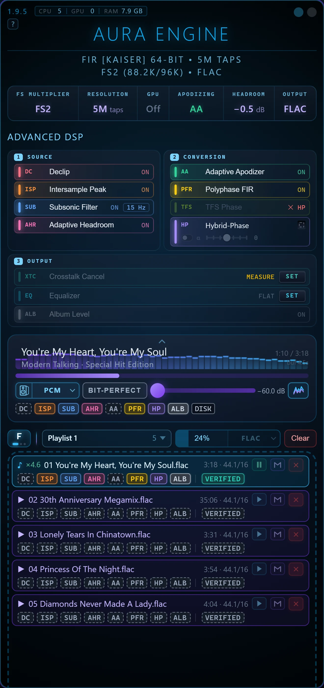
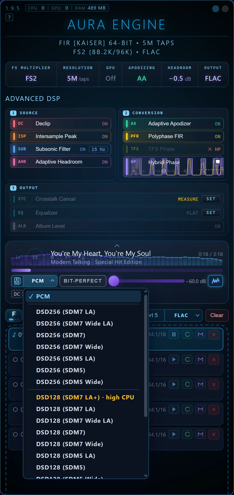
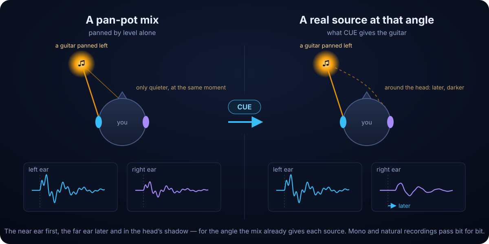
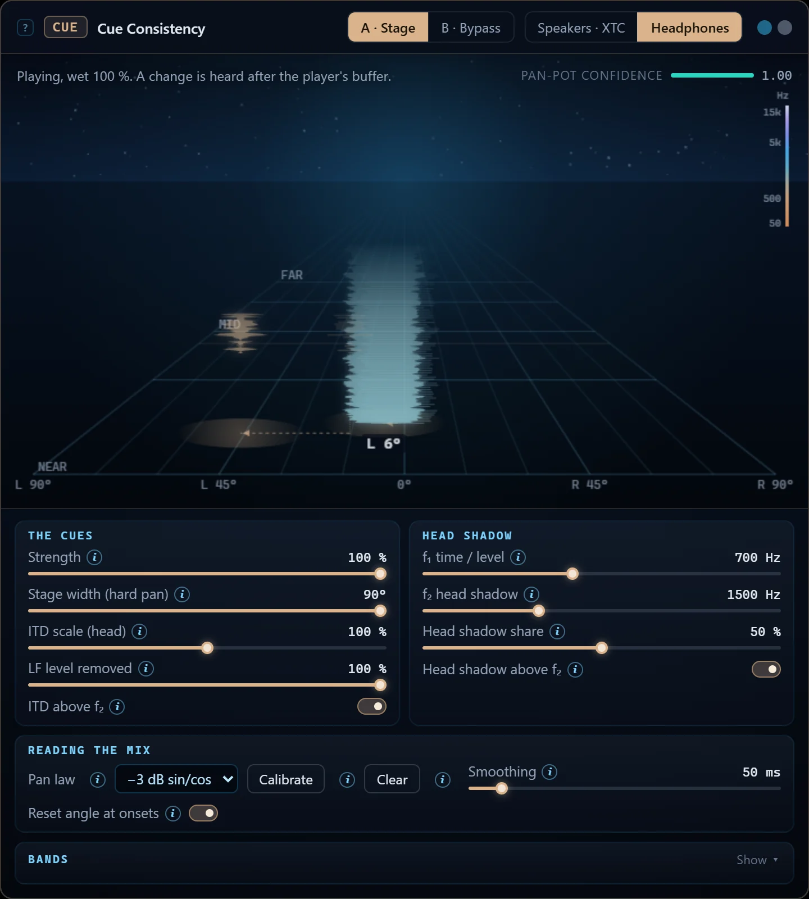
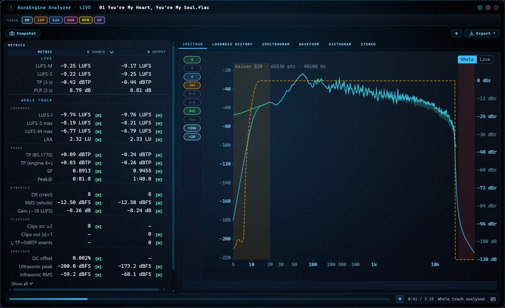
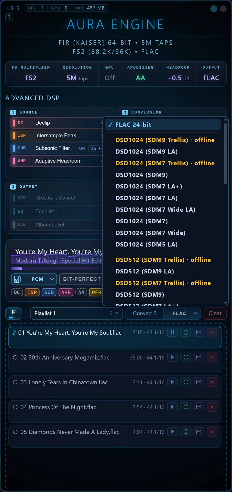
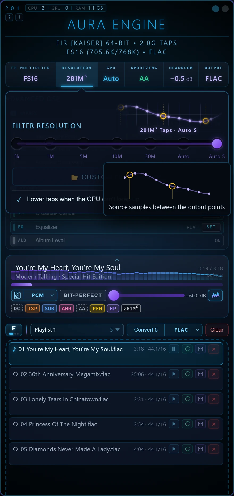
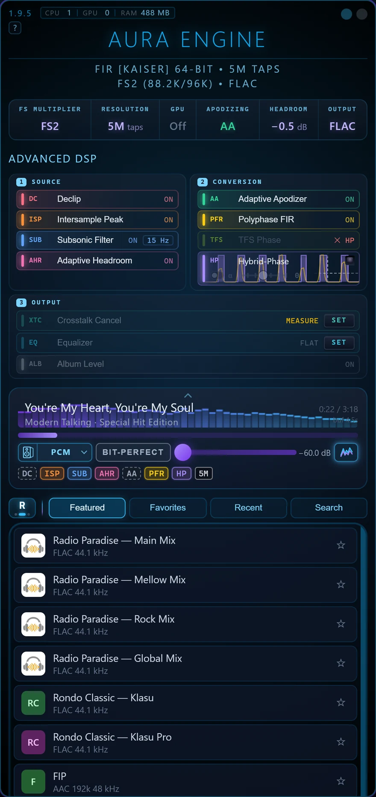
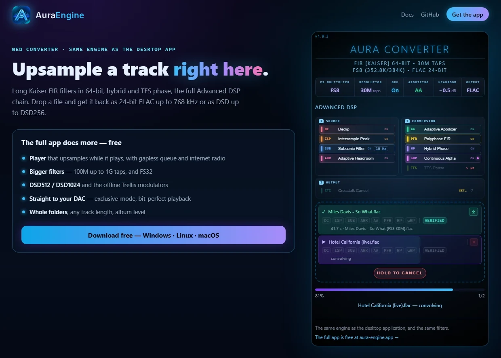

Every file in the list has ▶ beside C. Both run the same chain — the same filters, phase engine, rack and output stages, from the same code.
Renders hi-res files to keep and play anywhere — 24-bit FLAC checked against the 64-bit render, or DSF from DSD64 to DSD1024. No deadline: any filter, on any machine, one level per album.

Plays the source through the same chain at once — to hear a setting before an evening goes into converting, or to listen without disk space for hi-res copies. Internet radio too.

AuraEngine installs a virtual ASIO device, Aura Player ASIO. Choose it as the output in foobar2000, JRiver, HQPlayer or Roon, press play — and the music goes through the same rack to your DAC, at the output rate, BIT-PERFECT if you switch it on.
The sound comes out about 2.5 s after the player, so a pause or a seek there is heard that much later.
How to set it upA studio pans a guitar left by making it louder on the left — that is all. A real guitar on your left also reaches your left ear first and your right ear in the shadow of your head. CUE gives each panned source those missing cues, for the angle the mix already gives it.


Player only, off by default · switch CUE on in the rack, then SET. It deliberately changes the sound, like XTC.
Every FIR filter forces a choice. Linear phase keeps the stereo image coherent but pre-rings before every attack; minimum phase hits clean but warps timing. AuraEngine renders the track twice in full and switches between the two renders per transient.
Multistage upsampling runs a 30M-tap filter at ×8 on 27 ms of CPU per second of music on four efficiency cores — no graphics card needed, matching the single-stage output to −204 dBFS. Since 1.9.8 the long filter skips the silence before and after a track, bit for bit: the billion-tap filter at ×16 plays on 2.5–3 % of the CPU instead of 10–11 %, and Hybrid-Phase starts a new track in seconds. Measured →
Kaiser filters from 5K to 30M taps, designed offline in 128-bit, run in 64-bit — or Auto: an unwindowed sinc exactly as long as the track can use.
Plays 30M taps on about a quarter of a core. When the processor cannot keep up, a discrete graphics card takes over by itself, without precision loss — never required.
DSF files from DSD64 to DSD1024; live DSD64–256 over DoP. Shaped noise above 48 kHz.
Every FLAC is checked against the render it came from. Bit-perfect output on all three systems.
Thousands of stations through the same rack, live. Plus an ASIO input for anything else on the PC.
A real-time analyzer from 5 Hz, and GLSL scenes that draw the music while it plays.




The same engine runs on Hugging Face: drop a file, pick a filter, get a hi-res FLAC back.

An upsampler is only worth trusting if its signal path is fully documented. Ours is — with measurements.
Each DSP stage with its parameters and rationale.
Read →The detector, the switch, the proof.
Read →Multistage upsampling and silence skipping, measured.
Read →128-bit offline, 64-bit at runtime.
Read →Acceleration without precision loss.
Read →The audit trail behind every render.
Read →The axioms every stage obeys.
Read →Convert or play, and what differs.
Read →Version 2.0.1. The app updates itself; filters download inside it on first use.
aura-engine.exe.xattr -cr "/Applications/Aura Engine.app".chmod +x the AppImage and run it. For direct hw: output your user must be in the audio group.AuraEngine is built by one developer. If it made your music sound better, a donation pays for the hours behind the next filters, measurements and releases. Thank you.
TMAudt4v9USnRzEe4ZALiSgJ242um6uDz7Send USDT on the TRON network (TRC-20) only.
bc1q4w0z2277ydsydsm98js6vzp46zp0lxpywvk4maSend BTC on the Bitcoin network only.
0x57379720E8d5Aea5817724672864a01C9F6C5aA6Send ETH on the Ethereum mainnet only.
Can’t donate? A star on GitHub or a word on a forum helps too.